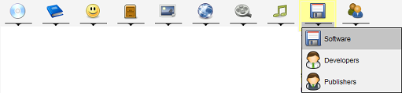

Main Window
The main window contains a menu bar, toolbar, module list, status bar, and a pane where new and existing items can be viewed.
Menu bar
The menu bar provides quick access to all the functionality available for the currently active module.
Tool bar
The tool bar provides shortcuts to all the same functionality as the menu bar.
Module list
The module list shows the modules you can work with. You can switch between modules at any time (even during imports).
The active module is highlighted.

Some modules have sub modules assigned to them. For example, the movies module has a sub module called actors.
These sub modules support the main module; the Actors can be assigned to movies.

Click on the small bar at the bottom of the module button. This will allow you to select
any of the sub modules.
Grouping pane
Allows for grouping the items. More about this.
View
Existing items are displayed in the middle section of the screen.
The displayed items can be opened, updated or deleted. All of this is explained in the
views section of the help.